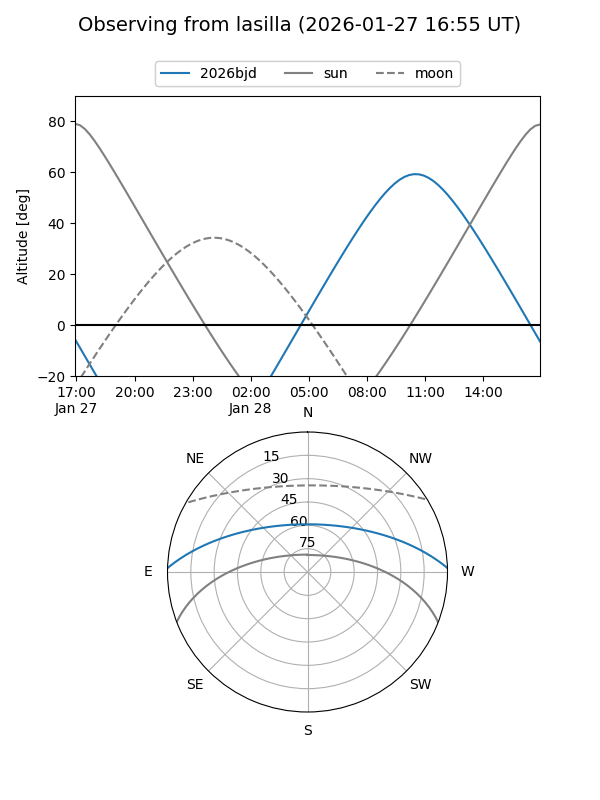
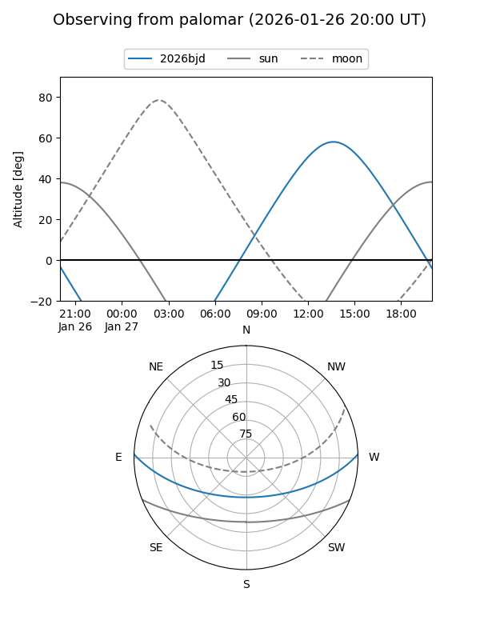

2026bjd
Target 2026bjd at 2026-01-27 13:11
Aliases and brokers:
FINK: link
Lasair: link
ALeRCE: link
TNS: link
YSE: link
alt names
ZTF26aadsuad (ztf,fink_ztf)
2026bjd (tns,yse)
Coordinates:
equatorial (ra, dec) = 214.2629,+1.54388
equatorial (HMS+DMS) = 14:17:03.09,+01:32:37.96
galactic (l, b) = (345.2679,+57.20287)
Flags:
Photometry:
last ztfg=19.65, ztfr=19.82
1 ztfg, 1 ztfr detections
Lightcurve

Visibility


Additional plots